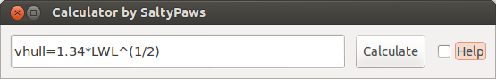

Calculator
Links
This plugin is available for Linux and Windows.
-
Source SaltyPaws: Github Calculator Plugin
-
Source Rasbats (with windows): Github Calculator muparser Windows fix
-
Release: Linux and Windows release
-
Download: https://opencpn.org/OpenCPN/plugins/calculator.html
-
Forum: CF Calculator_pi Thread
-
Forum: Plugin-calculator
Goals
This is a light weight yet powerful calculator plugin for OpenCPN which includes functions to solve nautical questions.
-
Would you like to know your hull speed?
-
Increase of draft due to heel.
-
More functions can be added by the author.
Key features are:
-
Storing results in variables
-
Shows historic calculations
-
Full complement of nautical functions
-
Screen footprint can be optimized & minimized as required
Adding formulas is easy. If your favorite nautical equation is missing, please let me know your equation via flyspray, and I will add it.
Use
The calculator plugin allows you to carry out all nautical calculations, without having to leave the OpenCPN environment. The scientific calculator is capable of working with, and retaining variables. * When starting the plugin for the first time, go to
to find the plugin tab. Click on the calculator plugin, then the “Enable” button.
-
Back in the OpenCPN menu the calculator icon
brings up the calculator.

-
Tick the “Help” tickbox to bring up a comprehensive help screen. Unticking the help button brings you back to the calculator only interface and resizes the menu to the original size.
-
Enter calculations in the box and press enter or “Calculate” for evaluation. Press the up or down button, to retrieve historic input and results (max 30).
Examples
Examples of expressions that work in the calculator are: (comments are in brackets, some results depend on other example calculations):
Conversions:
-
ftm=0.3048 (feet to meters)
-
km_to_nm=0.539957 (Kilometers to nautical Mile)
-
ftm*LWL (waterline length in meters)
Distance to horizon
-
R=6378.1*1000 (Radius of the earth in m)
-
H=2.5 (Height of the eye above sea-level in m)
-
d = R * acos(R/(R h)) (Distance to horizon in m)
-
ans*km_to_nm (Distance to horizon in nm)
Distance to lighthouse
-
H1=200 (height of lighthouse in m)
-
d1 = R*acos(R/(R H1)) (Distance to horizon in m)
-
distance=d1+d (visibility range of lighthouse in m)
Useful Notes
-
Ans is the result of the previous calculation
-
Variables can be defined (e.g. myvariable=10/8*cos(dtr*90) or yourvariable=Ans)
-
% modulus - Divides the value of one expression by the value of another, and returns the remainder.
-
! factorial
-
Sign Returns .-1 for negative numbers and 1 for positive numbers
-
Factorial Variables: Pi, e
-
dtr is the conversion factor from degrees to radians
Built-in functions
The following table gives an overview of the functions supported by the default implementation. It lists the function names, the number of arguments and a brief description.
| Name | Argc. | Explanation |
|---|---|---|
TRIGONOMETRY |
default entry use radians e.g. sin(dtr*90) to calculate in degrees |
|
sin |
1 |
sine function |
cos |
1 |
cosine function |
tan |
1 |
tangens function |
asin |
1 |
arcus sine function |
acos |
1 |
arcus cosine function |
atan |
1 |
arcus tangens function |
sinh |
1 |
hyperbolic sine function |
cosh |
1 |
hyperbolic cosine |
tanh |
1 |
hyperbolic tangens function |
asinh |
1 |
hyperbolic arcus sine function |
acosh |
1 |
hyperbolic arcus tangens function |
atanh |
1 |
hyperbolic arcur tangens function |
LOGARITHMIC |
||
log2 |
1 |
logarithm to the base 2 |
log10 |
1 |
logarithm to the base 10 |
log |
1 |
logarithm to the base 10 |
ln |
1 |
logarithm to base e (2.71828…) |
OTHER |
||
exp |
1 |
e raised to the power of x |
sqrt |
1 |
square root of a value |
sign |
1 |
sign function -1 if x<0; 1 if x>0 |
rint |
1 |
round to nearest integer |
abs |
1 |
absolute value |
min |
var. |
min of all arguments |
max |
var. |
max of all arguments |
sum |
var. |
sum of all arguments |
avg |
var. |
mean value of all arguments |
Binary Operators
The following table lists the default binary operators supported by the parser.
| Operator | Meaning | Priority |
|---|---|---|
= |
assignment |
-1 |
&& |
logical and |
1 |
or |
logical or |
2 |
⇐ |
less or equal |
4 |
>= |
greater or equal |
4 |
!= |
not equal |
4 |
== |
equal |
4 |
> |
greater than |
4 |
< |
less than |
4 |
+ |
addition |
5 |
- |
subtraction |
5 |
* |
multiplication |
6 |
/ |
division |
6 |
^ |
raise x to the power of y |
7 |
^ |
use ^(1/2) for square root |
7 |
-
The assignment operator is special since it changes one of its arguments and can only by applied to variables.
MuParser
muParser has built in support for the if.. then.. else operator. It uses lazy evaluation in order to make sure only the necessary branch of the expression is evaluated.
| Operator | Meaning |
|---|---|
?: |
if then else operator |
Variables:
| pi, e | well known |
|---|---|
ans |
the result of the previous calculation |
dtr |
conversion factor from degrees to radians |
Define variables |
e.g. myvariable=10/8*cos(dtr*90) or yourvariable=ans |
clear |
removes results in the history and leaves defined variables intact |
User Interface:
Type these commands in the command window:
| history | Toggle the history panel |
|---|---|
showhelp |
Show/Hide the Help button |
showcalculate |
Show/Hide the Calculate button |
showhistory |
Show/Hide the history toggle |
help |
show the help menu |
Settings/Plugins/Preferences:
-
Show/Hide Calculate
-
Help and History toggle buttons
-
History Settings: max Results -this is the number of results that will be stored in the history pull down. The history pulldown will contain five times this value.
-
Log to opencpn: Enable/Disable logging of results to opencpn logfile.
Compiling
You have to be able to compile OpenCPN itself - Get the info at Developers Manual
-
git clone https://github.com/Rasbats/calculator_pi
Build out of OpenCPN branch!
in folder calculator_pi
-
mkdir build
-
cd build
-
cmake ..
-
make
-
sudo make installf
After using wxformbuilder to modify the interface, use degreefix.sh, to facilitate the windows build. When updating the Excel file with formulas and conversions, convert to cpp code by running the supplied perl script
Changes to version 1.6
-
Added Willson Fetch Equation
-
Added wind speed to Beaufort equation
-
Changed to MuParser math interface
-
Added History pulldown box, improved history box behaviour
-
Added reporting modes (1000 separator, SI prefixes, accuracy)
-
Added function button in OpenCPN toolbar, with option to switch off from plugin settings
-
Minor tweaks and fixes
SaltyPaws aka Walbert Schulpen
Support for Diagrams
I believe the plugin supports small jpg & png images for the purpose of better visualization. What is needed to implement this system is some diagrams and more knowledge about the plugin. Rgleason
Early Executables
Earlier compiled library files can be downloaded/uploaded here. https://sourceforge.net/projects/opencpnplugins/
License
The plugin is licensed under the terms of GPL v2 or, at your will, later. The MuParser files are by Ingo Berg and is open source. For full licence, please see the muparser source files.